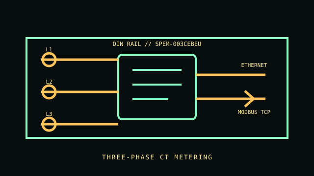

[ THREE-PHASE ENERGY METER // 120 A CT KIT ]
Shelly Pro 3EM
DIN-rail three-phase meter, model SPEM-003CEBEU, documented with the 120 A CT kit. The meter's communications do not make it a switched rack PDU or protective relay.

VARIANT CONTROL: Shelly offers different Pro 3EM revisions and CT packages. This record names the 120 A CT package; verify that the supplied sensors and order code match the unit before use.
Specifications & compatibility
| Exact model / function | Shelly Pro 3EM, SPEM-003CEBEU, 120 A CT package; three-phase energy metering. |
|---|---|
| Measured metrics | Per-phase voltage, current, active and apparent power, and energy; documented active energy accuracy class B. |
| Voltage / phase | Three-phase system; published operating/supply range 100–260 V. Confirm the wiring topology and per-phase limits in the exact revision manual. |
| Current range / accuracy | Package includes 120 A CTs. The 120 A value is sensor capacity, not direct-current input. Active-energy measurement class B; do not infer other instrument accuracies from this energy class. |
| Display / network / output | No measurement display. Ethernet, Wi-Fi and Bluetooth; local web interface, Modbus TCP and documented HTTP/MQTT integration. Verify firmware support. |
| Form factor | DIN-rail electronic meter with external current transformers. |
| Host compatibility | Shelly app, local network clients and compatible Modbus TCP, HTTP or MQTT hosts. No OS-specific desktop requirement is listed. |
| Electrical safety | Use only the manual's voltage, phase and CT wiring instructions. Installation is for a qualified person with the panel safely isolated; communications and metering are not overcurrent protection or an isolation method. |
Installation & archival notes
- Record phase configuration, CT ratio/orientation, full model code and firmware with readings.
- Do not assume a CT kit from another Pro 3EM revision is interchangeable.
- Never work on exposed energized conductors; obey local electrical codes and sensor instructions.
Manufacturer sources
- Shelly — Pro 3EM product listingManufacturer product family and available CT package information; confirm the legacy SPEM-003CEBEU variant label.
- Shelly Knowledge Base — Pro 3EMManufacturer technical documentation, measurements and installation information.
- Shelly US — Pro 3EM documentationRegional documentation and product reference.